Pressing i at the River Console rebuilt the bridge on every keypress because
setTileAt is idempotent but the toast and hint fired repeatedly and
the physics colliders were re-destroyed each time, risking memory churn.
A private bridgeBuilt flag (also persisted in GameState.bridgeBuilt
so it survives reloads) short-circuits the build path after the first activation.
Subsequent i presses while on the console show a "bridge already built" hint.
The entire game state — unlocked commands, crates destroyed, gate status, bridge status — was ephemeral and reset to defaults on every page reload.
Three changes implement a full save/restore cycle:
loadSavedState() and falls back to defaultGameState() if no save exists.saveState() on every state patch — zero extra calls needed.clearSavedState() so the new run starts clean.The speed reduction in INSERT mode (180 → 120 px/s) was imperceptible during play.
The HUD label changed to [INSERT] but the player cursor looked identical,
making it hard to track current mode at a glance.
The player cursor is now tinted soft blue (#88ccff) when in INSERT mode
and returns to normal on Esc. The tint is applied consistently wherever
setMode() is called (insert action, console activation, Esc handler).
Previously the crate tile silently swapped to path with no visual or physical feedback,
making it unclear whether the x command had done anything.
The crate now spins and shrinks to zero over 220 ms before the tile swap occurs,
and the camera shakes briefly for impact. The image properties are reset after the
tween so the underlying node is clean before setTileAt replaces its texture.
Players had no in-world cues pointing them toward shrines, the crate puzzle, or the River Console. The only guidance was the HUD hint bar, which many players don't read carefully during exploration.
Five signpost text objects were added at strategic waypoints:
Each sign uses a dark panel background, coloured per zone, and a small readable font (13 px Courier New) so it doesn't compete with gameplay elements.
New players were still entering Cursor Meadow without a guaranteed explanation of the base movement keys. The Mentor helped, but the game allowed wandering before that lesson happened.
The first entry to Level 1 now shows a blocking primer that teaches
h, j, k, and l, then dismisses on any key.
A persisted introSeen flag keeps the overlay from reappearing on later loads.
The signpost near the river helped, but the console tile itself still blended into the map. Players could reach the river bank and still miss the exact activation point.
The River Console now has a pulsing cyan beacon and a context-aware prompt.
Before i unlock it reads River Console, after unlock it switches to
[i] Build bridge, and after activation it settles on Bridge active.
Cursor Meadow was still completely silent, which made shrine unlocks, crate breaks, bridge activation, and the win state feel flatter than the visual feedback suggested.
A lightweight procedural soundtrack now runs in the overworld, with synthesized cues for
dialogue, mode changes, shrine unlocks, crate breaks, bridge activation, and victory.
The UI also adds an [M] Audio On/Off toggle that persists in save data.
| Test | Expected | Result | Notes |
|---|---|---|---|
| hjkl movement | Player moves in 4 directions at 180 px/s | PASS | No regression |
| Word Shrine unlock (w, b) | Commands added to HUD on first visit; dedup on revisit | PASS | Shrine visit set restored from save correctly |
| Line Shrine unlock (0, $) | Snap to marker row start/end | PASS | No regression |
| Operator Shrine unlock (x) | x command added; crate breaking enabled | PASS | No regression |
| Crate break animation | Crate spins/shrinks on x; camera shakes; tile swaps after tween | NEW · PASS | 220 ms Back.easeIn tween + shake(120, 0.006) |
| Gate opens after 3 crates | Wall tiles at col 41 removed; i command unlocked | PASS | No regression; animation does not affect gate logic |
| Bridge: single build (BUG-02) | i at console builds bridge once; subsequent presses show hint | FIXED · PASS | bridgeBuilt flag prevents re-fire |
| INSERT mode tint (BUG-04) | Player turns blue on i; clears to normal on Esc | FIXED · PASS | setTint(0x88ccff) / clearTint() in setMode() |
| Save on progress (BUG-03) | Reloading the page restores unlocked commands, gate, bridge status | FIXED · PASS | localStorage key vimquest-save-v1; merged with defaultGameState |
| Save restore: map geometry | Gate wall absent and bridge tiles present after reload if previously built | FIXED · PASS | restoreFromState() re-applies tile mutations post world-gen |
| R to restart clears save | Fresh state after restart; no stale save pollutes next run | PASS | clearSavedState() called before scene.restart() |
| Signposts visible in-world | 5 coloured signpost labels at correct positions | NEW · PASS | Confirmed in screenshots 02, 03, 04, 06, 10 |
| Intro primer overlay | First load blocks movement, teaches h j k l, dismisses on key press, never repeats after save | NEW · PASS | Persisted via introSeen in GameState; playthrough updated to dismiss it before movement |
| River Console beacon | Console tile pulses and shows a nearby prompt matching current progression state | NEW · PASS | Prompt text switches between River Console, [i] Build bridge, and Bridge active |
| Procedural audio | Overworld loop plays after game start; interaction SFX fire; M toggles persisted mute state | NEW · PASS | Audio uses WebAudio oscillators; mute status saved in GameState.audioMuted |
| Flag / win condition | Confetti burst + win overlay + LEVEL 1 COMPLETE text | PASS | No regression |
| Locked command feedback | Hint shows "command still locked: x" when used before unlock | PASS | No regression |
| HUD sync (mode, commands, hint) | All three HUD panels update instantly on state change | PASS | No regression; new bridgeBuilt field in GameState causes no UI breakage |
| ID | Description | Priority | Status |
|---|---|---|---|
| UX-04 | w/b road constraint doesn't match real Vim word-jump semantics | LOW | OPEN |
| ROAD-01 | Level 2 — Word Woods scene scaffold (w b e zone) | NEXT | PLANNED |
| ROAD-02 | Scene transition (fade/warp) into sub-areas / dungeon entrance | NEXT | PLANNED |
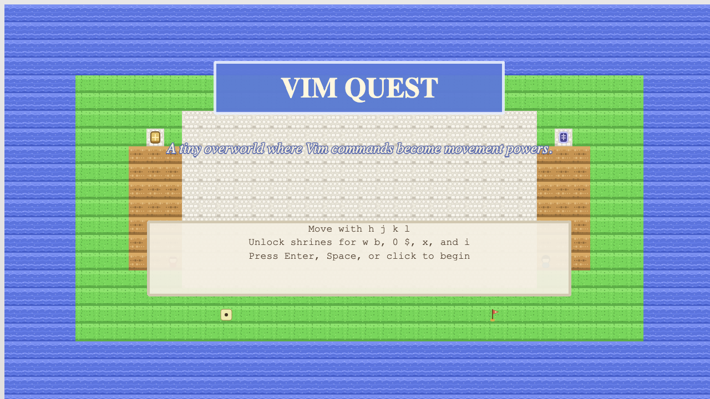
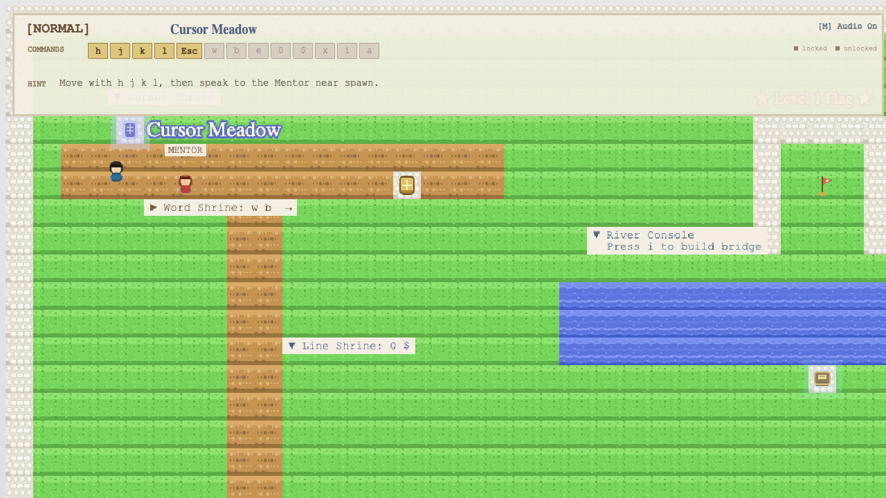
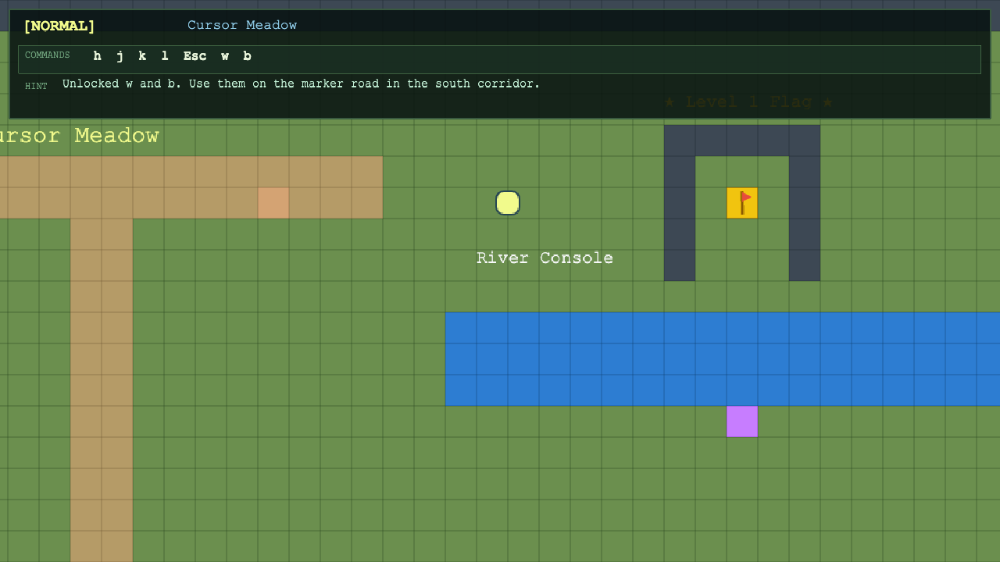
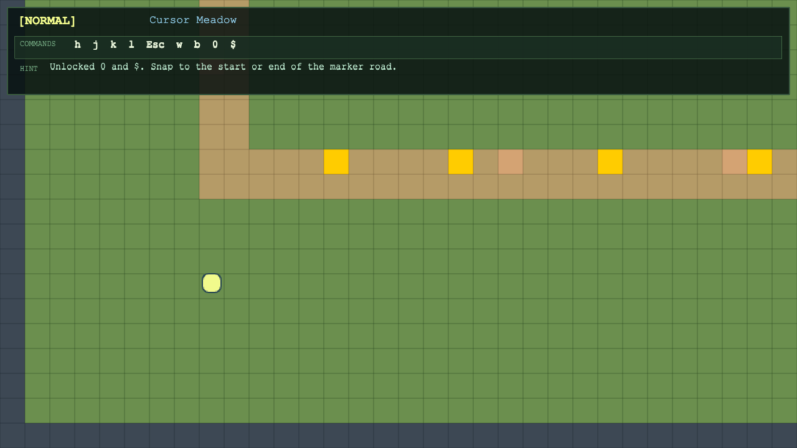
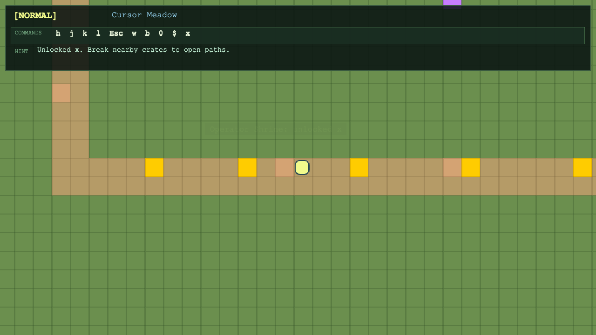
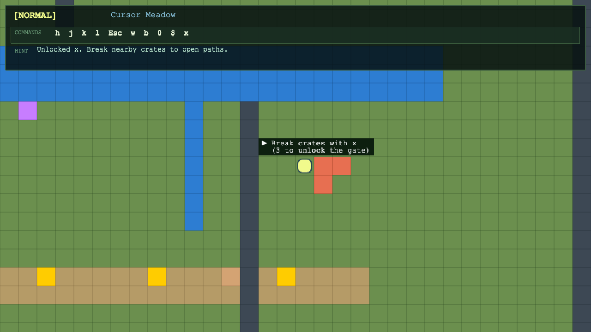
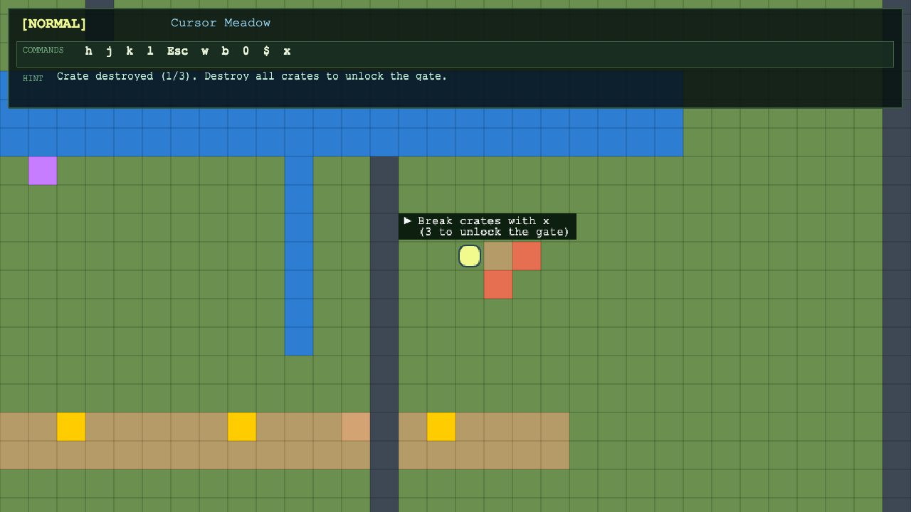
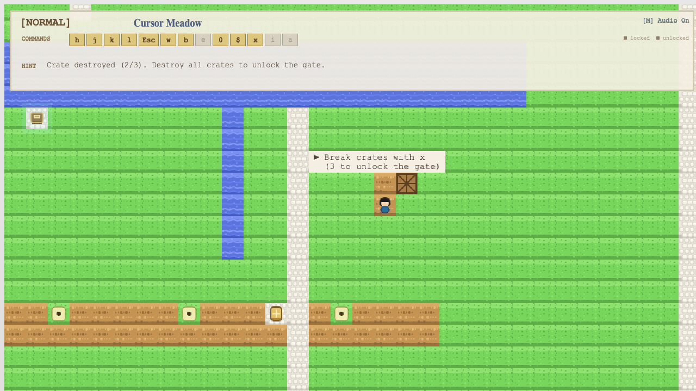
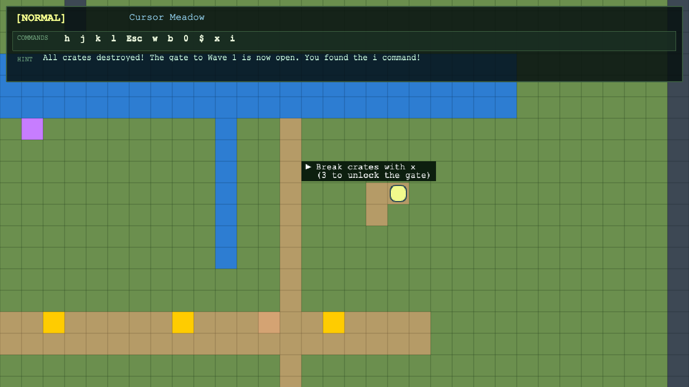
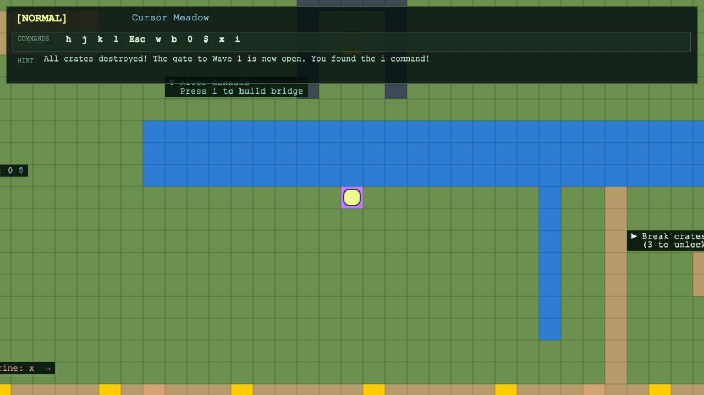
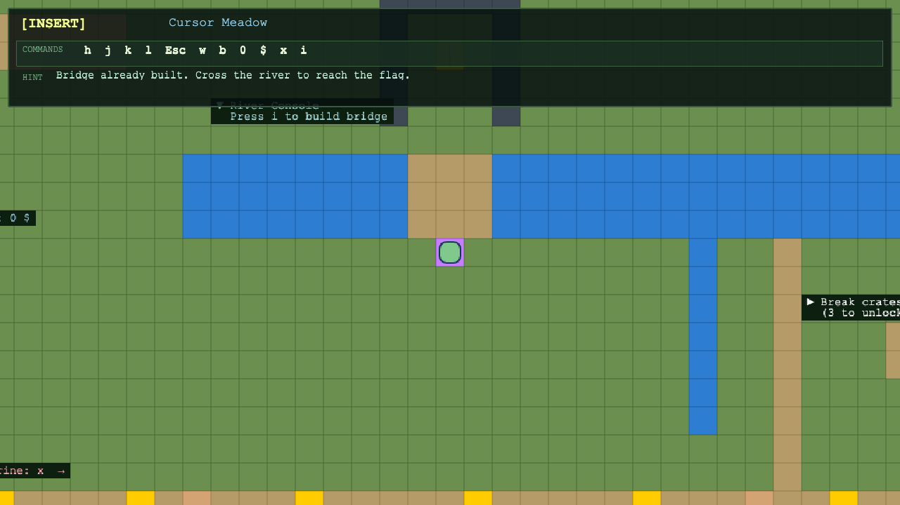
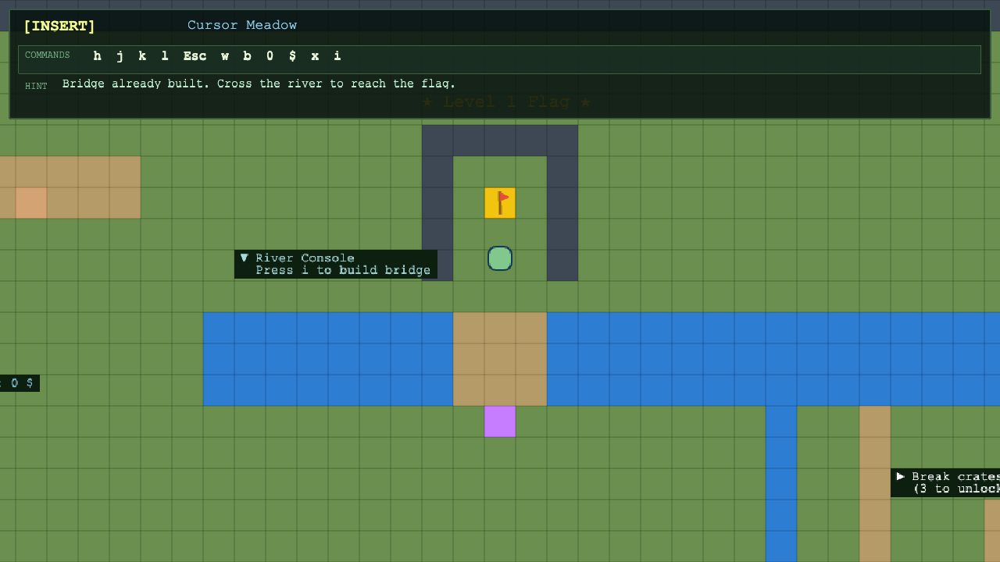
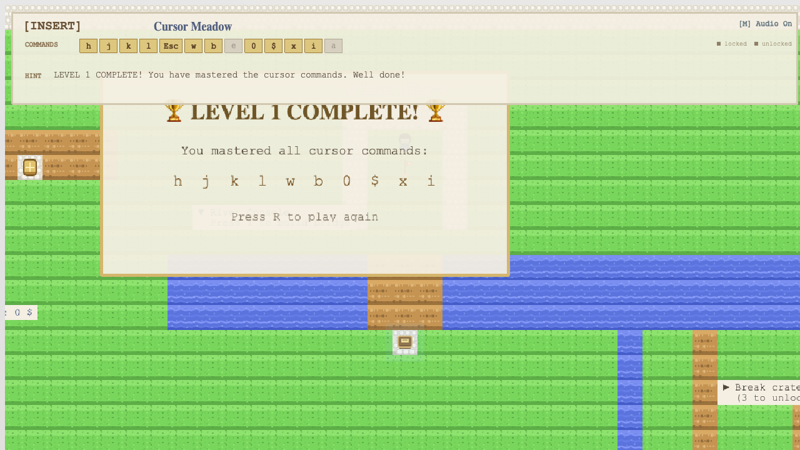
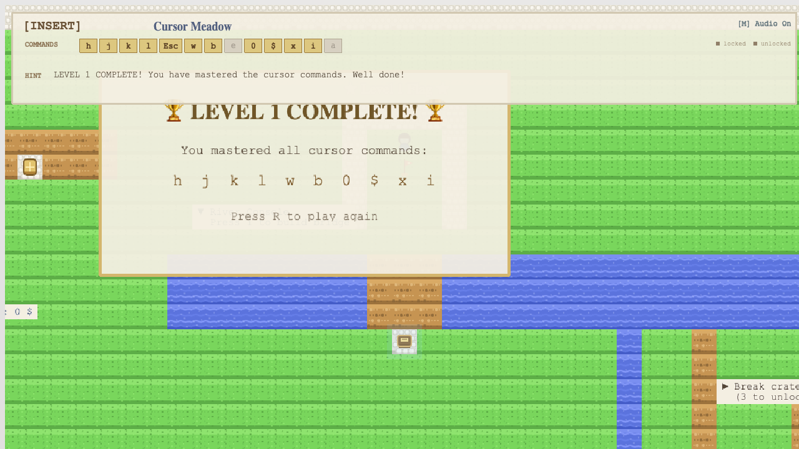